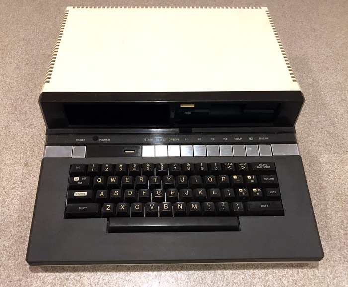
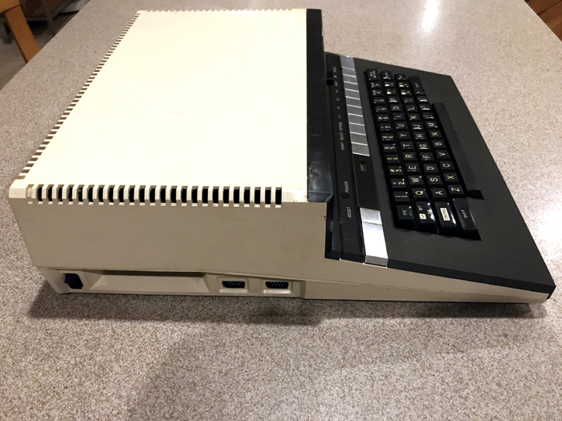
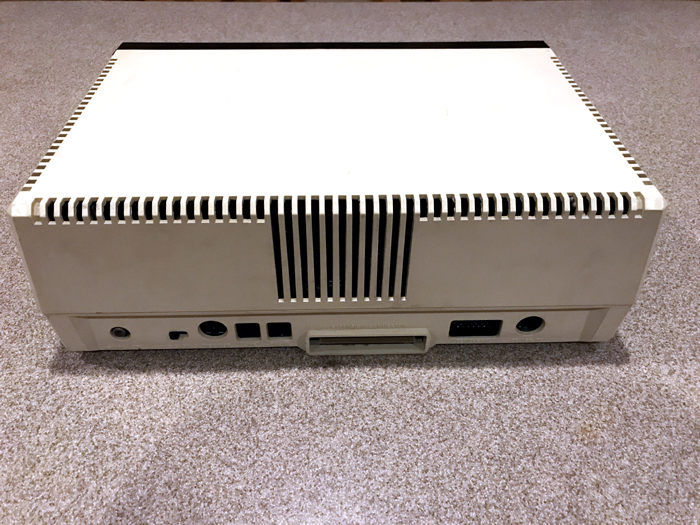
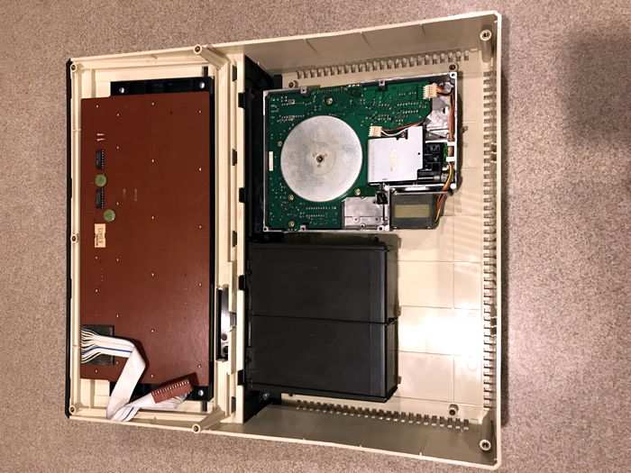
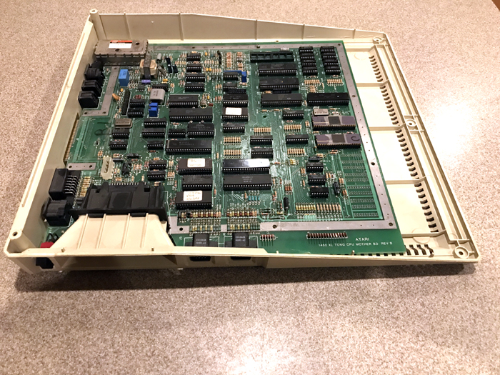

|
The Atari 1450XLD
Computer System
The Flagship Atari Computer
Codenames: Dynasty
(1983 Version, shorter motherboard with Disk Drive Daughter board)
TONG (1984 Version, very large all in one board)

The Atari 1450XLD
computer system. This was to be the flagship of the "Next
Generation" of Atari computers. The new XL
system would come with all of the features of the 600/800XL systems,
include the Voice and Modem features of the 1400XL but would also
include a high speed parallel bus disk drive controller.
The 1450XLD may
not have had a newer 16bit CPU or faster clock speed. What it did
have were some new additions to the Atari chipset (which comprised the
ANTIC, GTIA, and POKEY). These new chips were called the
"FREDDIE" (a DRAM controller which was an enhanced consolidation of
TTL chips found in earlier XL's) and the CO61618 Memory Management
Unit. What these little chips could do was something that was sorely
needed in the Atari 8bits. Freddie was an MCU (Memory Control Unit),
this new chip would have allowed BOTH the CPU and the
ANTIC chip to independently access different areas of memory for their
own use. What did this mean for the end user or more importantly ,
for programmers? It meant that new Atari's with Freddie MCU DRAM
controller and the CO61618 MMU could allow the CPU to access memory
for programs (up to 64K) and the ANTIC could access up to 8K or more
if needed to display graphics. This meant that programmers would
have more freedom and flexibility in writing programs that could have
had more complex commands, better graphics and enough memory to
accomplish what they had in mind.

The next
enhancement of the 1450XLD was its built in 300 baud modem. Atari
from the start saw that computers would one day all be tied to central
information systems and to each other and thought that it was
important to include a modem in its computers. (Unfortunately Atari
never included software that could upload and download until
Atari Corp released SX-Express).
The 1450XLD also
had a built in voice synthesizer to allow the user to write speech
easily into their programs, by using the V: handler, users to have
their programs speak, adding a new dimension to interactive computer
use. However in 1984 when the Atari 1450XLD went through a new design
change, the voice chip was changed to Voltrax's newest SC02 version.
The final
enhancement of the 1450XLD was it parallel disk drive controller
interface and the inclusion of a 360K double density disk drive (a 2nd
drive could be added at an authorized Atari service center) The
parallel disk interface is much faster then the SIO interface of all
the other Atari computers and would allow for up to 100K per second
data transfers. These new disk drives and their
controllers were also IBM MFM compatible due to the WD2797 disk
controller. This may have opened the doors for the XLD's to
read IBM formatted diskettes.

The 2nd version of
the Atari 1450XLD motherboards were known as the "TONG" motherboard
and were HUGE and contained an onboard disk drive controller as well
as a prototyping area and open socket that was planned to accomodate
the Atari "KERI" chip, also known as the CGIA (Combined GTIA & ANTIC).
The original 1450XL's were what's called the short board 1450XL
motherboard with no disk drive
controller onboard, it would instead be a daughter card which would be
sold and installed at a later time at an authorized Atari service
center.
The 1450XLD's would be sold as 1450XL's and when the user
wanted the disk drive upgrade, they would bring their Atari 1450XL to
an Authorized Atari service center and have the disk controller and
one or two disk drives installed. This would make the PC seem more
expandable to the customer and would have generated high volumes of
upgrades for service centers and Atari to cash in on.

The 1450XLD is a
beautiful machine with an ominously powerful look and feel. Its
disk drives are fast and although in today's world, the modem is
useless, its nice to know the feature is there. The monotone
robotic sounding voice synthesizer is primitive by today's realistic
true voice .WAV files, but it too is a pleasant feature to have
built in.
The 1450XLD is a
machine all Atari users wish was released, however the project was
cancelled and so was its lower cost version: The Atari 800XLD which
would have been an Atari 800XL with Freddie Chip and a built in disk
drive. The speech an modem features would be dropped in favor
of this new system with a target price of $350.
Also in the works were spec's for yet another
system designated the Atari 1650XLD, this information was obtained
from Steve Bristow and Ken Warren's Atari Engineering Logbooks.
The final system slated for release in 1st quarter 1985 was the
1850XLD, according to Steve Bristow, this system would be based on
the Amiga Lorraine Specifications with detachable keyboard and 68000
processor.
However, due to the
sale of Atari on July 2, 1984 all XL systems were canceled, to be
replaced with cost reduced 800XLF based designs internally called
900XLF but changed to 65XE and 130XE designations when sold in 1985.


Power Plug for the 1450XLD --- IMPORTANT NOTE: Never try to use a 600/800XL or
65/130XE
power supply on the 1400XL, 1450XL or the 1450XLD systems. You will blow the
GTIA and the
voice synthesizer daughterboard on them if you do.

Actual Atari Engineering Log Sheet
on
1650XLD, 800XLD and 1850XLD.
Page Updated 6/25/2019
Are you a former Atari engineer?
Did you work on the 1450XLD or have direct knowledge of this project?
Please contact the Atari Museum:
CLICK HERE
|